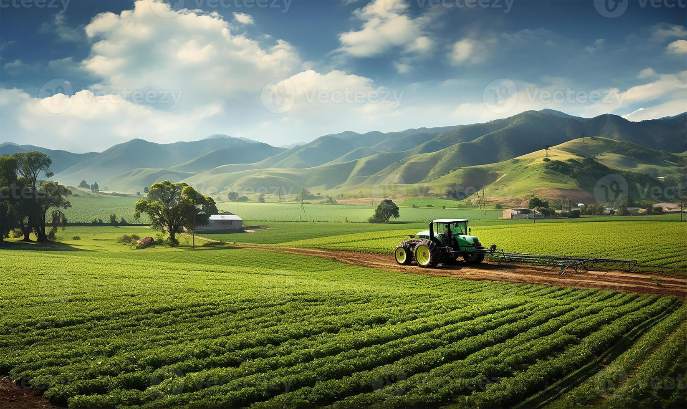

Soil Testing
Support with understanding soil conditions and using soil information for agricultural planning.

Lilitha's Nature Relief provides practical and technology-based solutions to support farmers and agricultural businesses.
Our services focus on improving agricultural planning, supporting crop management and helping agricultural businesses make informed decisions.
Book a ConsultationLilitha's Nature Relief is a South African agricultural support organisation that provides practical services to farmers, small-scale agricultural businesses and other agricultural organisations.
The organisation combines practical agricultural support with technology-based approaches. This allows clients to receive assistance with areas such as soil testing, crop management, greenhouse services, farm maintenance and agricultural consultation.
Support with understanding soil conditions and using soil information for agricultural planning.
Practical support for monitoring crop conditions and improving crop care.
Support for agricultural activities carried out in controlled greenhouse environments.
We offer soil testing, crop management, greenhouse services, farm maintenance and agricultural consultation.
Our organisation provides services in areas including the Eastern Cape and Gauteng, South Africa.
Visit our Book Consultation page and complete the consultation request form.